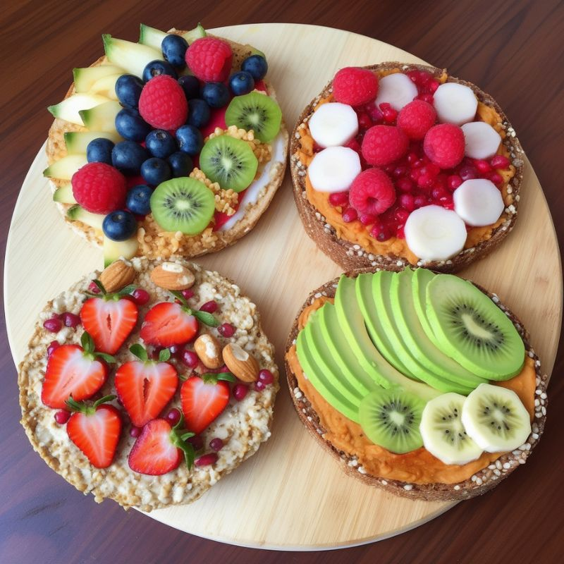
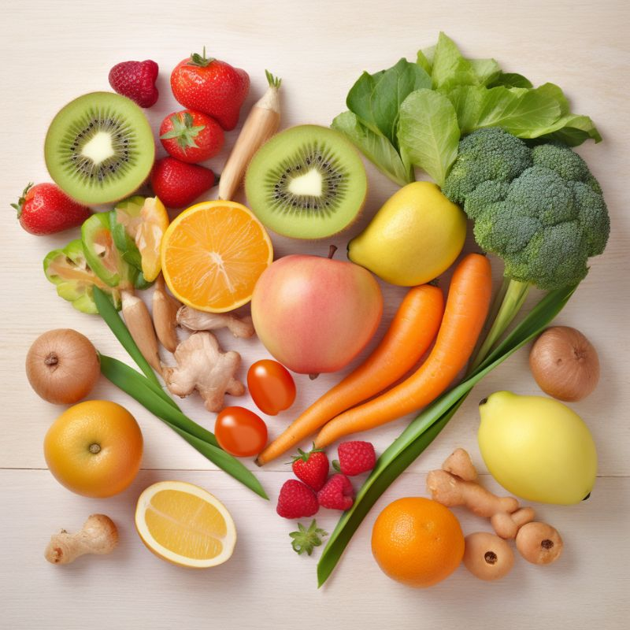
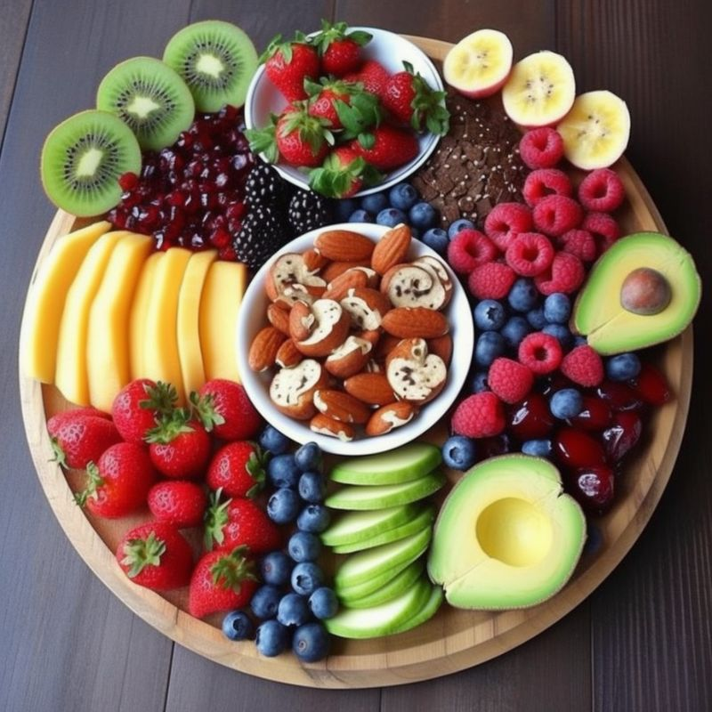

Gezond eten is van belang voor een goede gezondheid. Het is daarom belangrijk om te kiezen voor voedingsmiddelen die rijk zijn aan essentiële voedingsstoffen, zoals vitamines, mineralen en vezels. Daarnaast is het van belang om gevarieerd te eten en de juiste hoeveelheden te kiezen. Een gezond voedingspatroon bestaat uit voldoende groente, fruit, volkoren producten, peulvruchten, noten, vis, en magere en plantaardige producten. Ook is het belangrijk om voldoende te drinken, bijvoorbeeld water, thee en koffie zonder suiker. Met gezond eten kun je bijdragen aan een goede gezondheid en het voorkomen van verschillende ziekten.
  | Spinazie | Aardbeien | Kipfilet | Havermout | Broccoli |
| Blauwe bessen | Boerenkool | Runderlap | Quinoa | Mango |
| Zalm | Kiwi | Noten | Andijvie | Kalkoen |
| Volkorenbrood | Paprika | Ananas | Biefstuk | Linzen |
| Komkommer | Perziken | Varkenshaas | Chiazaad | Wortels |